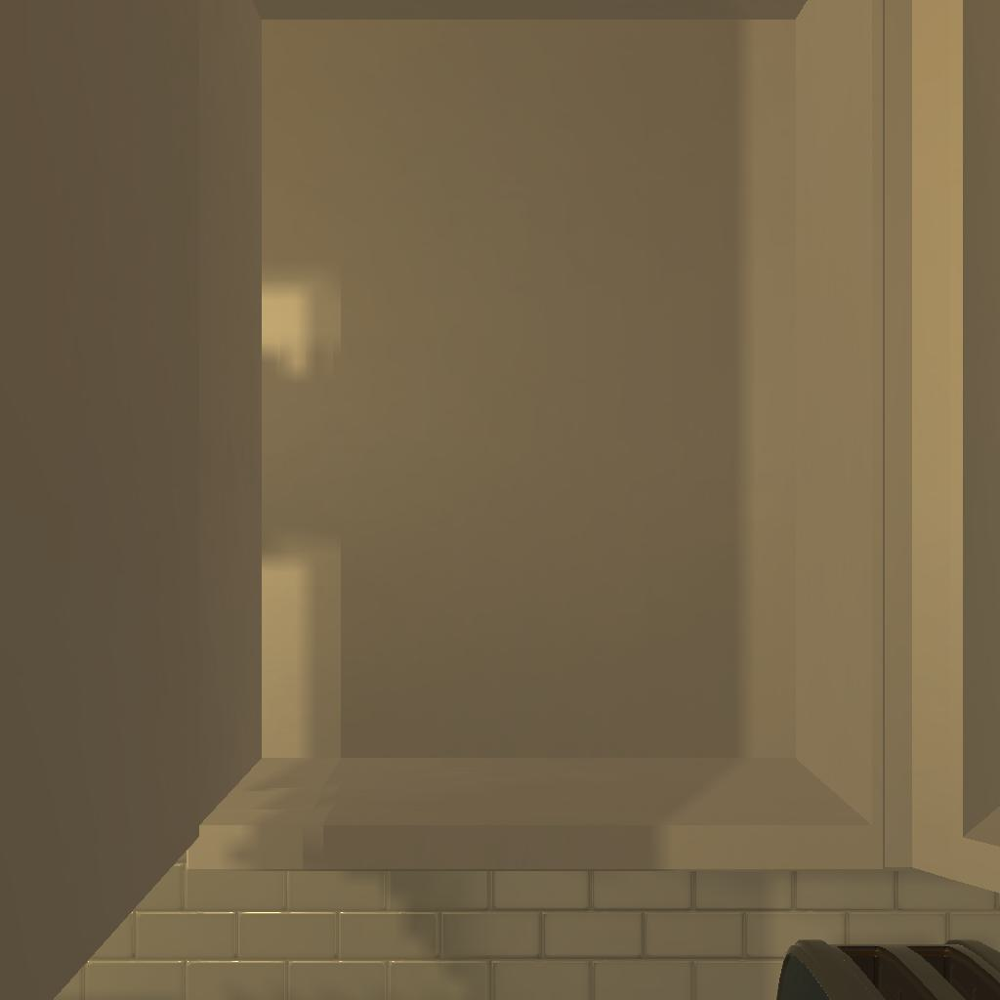

---------------------------------------------------------task: 10---------------------------------------------------------
--------------------------------------------------------------------------------------------------------------------------------------------------------------------
--------------------------------------------------------------------------------------------------------------------------------------------------------------------
Step:--------------------------------------------------------------------------17-------------------------------------------------------------------------------
----------------------------------------
VLM Prompt:
Image1:
Image2:
Image3:
**Instruction**
1. Analyze the provided images to identify all visible household objects and compare the difference between images (e.h. whether the object is opened or not and taken on hand or not), focusing on those relevant to the task description "clean some plate and put it in countertop."
2. Use the analysis of images and the task hint "The agent must find an object of the desired type, pick it up, go to a sink or a basin, clean the object with a sink or basin, and then find the correct location to place it and put it down there. The agent does not need to use soap bottle or faucet to clean the object, and the agent just needs to do action that is "clean the object with the sink or sink basin"." to answer the question: what is the most reasonable action in the choices for the task description "clean some plate and put it in countertop"?
3. Decide and write the answer using the template: The answer is: (i): , where i is the real number. If there is no desired object in images, search every place based on **Initial Observation** to find the object. And if no one is exactly correct, choose a similar answer.
**Initial Observation**
You are in the middle of a room. Looking quickly around you, you can see cabinet (1-20), toaster (1), microwave (1), garbagecan (1), countertop (1-2), drawer (1-4), stoveburner (1-4), sinkbasin (1), sink (1), fridge (1), diningtable (1), coffeemachine (1)
**Answer Choices**
(1): go to cabinet 2
(2): go to toaster 1
(3): go to cabinet 4
(4): go to cabinet 5
(5): go to microwave 1
(6): go to garbagecan 1
(7): go to countertop 1
(8): go to drawer 1
(9): go to cabinet 6
(10): go to cabinet 7
(11): go to drawer 2
(12): go to stoveburner 1
(13): go to stoveburner 2
(14): go to countertop 2
(15): go to cabinet 8
(16): go to cabinet 9
(17): go to cabinet 10
(18): go to drawer 3
(19): go to drawer 4
(20): go to stoveburner 3
(21): go to stoveburner 4
(22): go to cabinet 11
(23): go to cabinet 12
(24): go to cabinet 13
(25): go to cabinet 14
(26): go to sink 1
(27): go to cabinet 15
(28): go to fridge 1
(29): go to cabinet 16
(30): go to cabinet 17
(31): go to cabinet 18
(32): go to cabinet 19
(33): go to diningtable 1
(34): go to coffeemachine 1
(35): go to cabinet 20
(36): open cabinet 1
(37): close cabinet 1
(38): take nothing from cabinet 1
(39): examine cabinet 1
**Answer**
Let's think step by step by following the instructions.
----------------------------------------
----------------------------------------
Original Response:
Firstly, there is no plate visible in any of the images provided. Therefore, the agent must search for a plate.
Based on the **Initial Observation**, the most likely places to find a plate would be in a cabinet or a drawer. The task does not require the agent to use a toaster, microwave, garbage can, stove burner, sink (since the agent does not need to use the faucet), fridge, dining table, or coffee machine to clean a plate. Therefore, we can eliminate those options.
Considering the typical storage of plates, they are most likely to be found in a cabinet rather than a drawer. Among the cabinets, it's common to store plates in the lower-numbered cabinets as they are usually located closer to the ground and are more accessible.
Given this information and the available choices, the most reasonable action for the task description "clean some plate and put it in countertop" would be to first find a plate by searching in the cabinets.
The answer is: (1): go to cabinet 2
----------------------------------------
----------------------------------------
>>> Refine Original VLM Response and Get Pure Action: go to cabinet 2
----------------------------------------
-----------------------------------------------------------------
Running time: 20.154143810272217 seconds
Total Money: 5.427700000000005
-----------------------------------------------------------------
-----------------------------------------------------------------
Text Observation:You arrive at loc 1. The cabinet 2 is open. On the cabinet 2, you see a pot 1, a pan 1, a bread 1, a cup 1, a pan 2, a bowl 1, a stoveknob 1, a stoveknob 2, and a stoveknob 3.
-----------------------------------------------------------------
UNSUCCEED